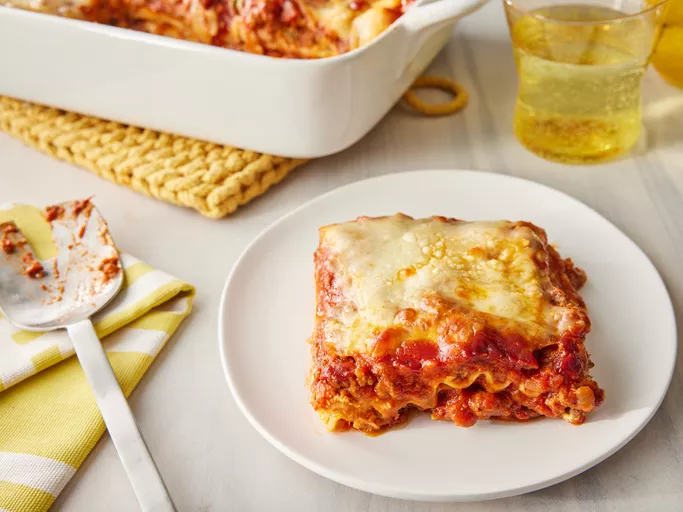

Explore a variety of delicious and easy-to-make recipes, from savory meals to sweet treats. Each dish is thoughtfully crafted to bring you the best flavors, with simple ingredients and clear instructions. Whether you're a beginner or an experienced cook, you'll find something to inspire your next meal. Start browsing, get cooking, and enjoy a world of flavors!